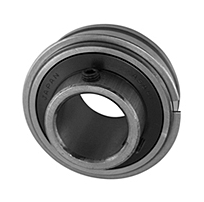
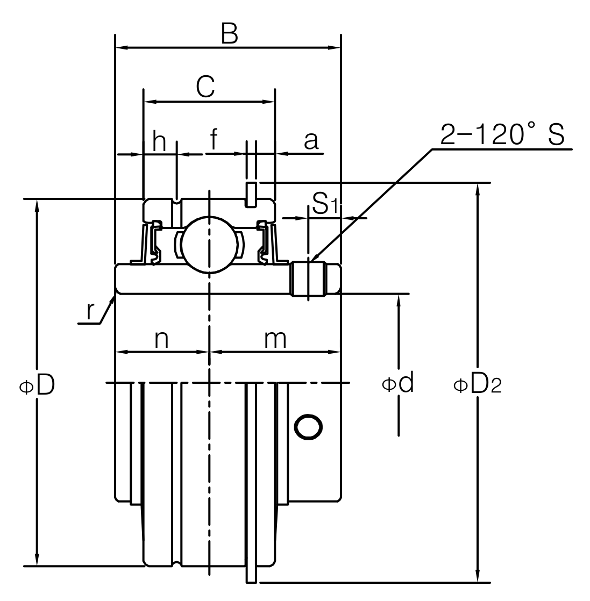

Ball Bearing Units · SER Type
세트스크류(고정나사) 2개와 스냅링으로 축에 고정하는 SER 인서트 베어링입니다. 원통형 외륜을 사용하며, 하우징 규격이 SA·CSA와 달라 서로 호환되지 않는 별도 계열입니다.
형번 또는 치수 일부만 입력해도 검색됩니다.
실물 사진 · JIB 공식 카탈로그 규격 도면


ΦD(외경) · ΦD2(스냅링 외경) · Φd(내경) · B(폭) · C(볼 유효폭) · S·S1(세트스크류) · n·m(내륜 양쪽 폭) · 원통 외륜 · 세트스크류+스냅링 고정 (SA·CSA보다 협폭인 별도 하우징 계열)
| 형번 | d(내경) | D(외경) | B(폭) |
|---|---|---|---|
| SER204 | 20 | 47 | 31 |
| SER205 | 25 | 52 | 34.9 |
| SER206 | 30 | 62 | 38.1 |
| SER207 | 35 | 72 | 42.9 |
| SER208 | 40 | 80 | 49.2 |
| SER209 | 45 | 85 | 49.2 |
| SER210 | 50 | 90 | 51.6 |
| SER211 | 55 | 100 | 55.6 |
| SER212 | 60 | 110 | 65.1 |
단위: mm · SWS·JIB 자료에 없어 해외 정식 제조사(AMI Bearings) 공식 카탈로그를 기준으로 작성했습니다. ※ SER는 20mm 미만 소형 규격이 없습니다.
※ 형번별 인치 보어(-8, -10 등) 세부 규격은 표에 넣지 않고 대표 미터 보어 규격만 실었습니다. 정밀 가공·발주 전에는 반드시 당사 정식 규격표 원본으로 최종 확인하시기 바랍니다.
이 제품군은 ISO 492 일반 허용공차 규격이 적용되지 않는(또는 별도 정밀등급이 적용되는) 품목으로, 공차는 제조사 자체 규격을 따릅니다. 정확한 공차는 발주 전 문의 바랍니다.